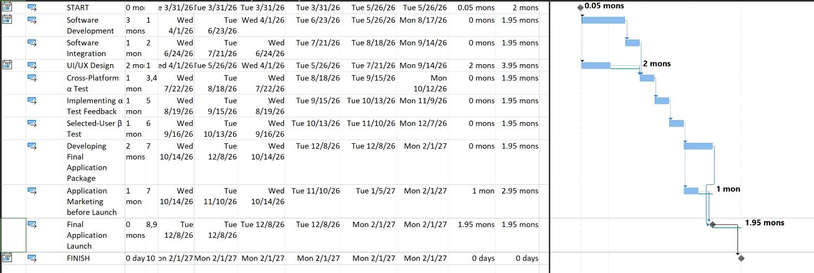
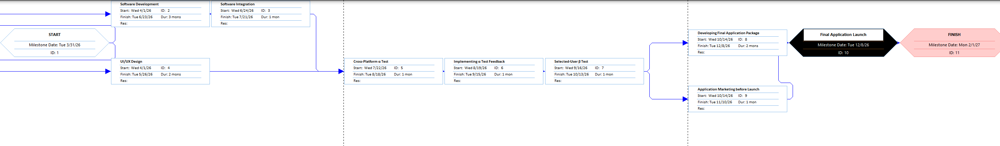

DAILY SPORTS APP
SLACK MANAGEMENT & PDM ANALYSIS REPORT
1. INITIAL PROJECT PLAN & MANUAL CPM
The objective of this project is to develop and launch a daily sports training and management application. The project consists of 9 distinct tasks mapped using the Precedence Diagramming Method (PDM). All dependencies are defined as Finish-to-Start (FS) with zero lag.
Manual Calculation Methodology (CPM):
- Forward Pass: Early Finish is calculated as EFj = ESj + Dj, and Early Start for dependent tasks is ESj = max{EFi}.
- Backward Pass: The client deadline of 10 months is used as the Late Finish (LF) for the final milestone. Late Start is calculated as LSi = LFi - Di, and Late Finish for preceding tasks is LFi = min{LSj}.
- Slack Formula: Total Slack (TS = LS - ES) and Free Slack (FS = min{ESj} - EFi).
| ID |
Task Name |
Dur (mo) |
ES |
EF |
LS |
LF |
TS |
FS |
| 1 | Software Development | 3 | 0 | 3 | 1 | 4 | 1 | 0 |
| 2 | Software Integration | 1 | 3 | 4 | 4 | 5 | 1 | 0 |
| 3 | UI/UX Design | 2 | 0 | 2 | 3 | 5 | 3 | 2 |
| 4 | Cross-Platform α Test | 1 | 4 | 5 | 5 | 6 | 1 | 0 |
| 5 | Implementing α Feedback | 1 | 5 | 6 | 6 | 7 | 1 | 0 |
| 6 | Selected-User β Test | 1 | 6 | 7 | 7 | 8 | 1 | 0 |
| 7 | Developing Final Package | 2 | 7 | 9 | 8 | 10 | 1 | 0 |
| 8 | Application Marketing | 1 | 7 | 8 | 9 | 10 | 2 | 1 |
| 9 | Final Launch | 0 | 9 | 9 | 10 | 10 | 1 | 1 |

Figure 1: Manual PDM Network Diagram
DAILY SPORTS APP
MS PROJECT VALIDATION
2. SOFTWARE IMPLEMENTATION & VALIDATION
To check our manual calculations, the project was imported into Microsoft Project. The deadline of January 31, 2027 (a 10-month window) was added to the schedule. We observed clear differences between our manual calendar calculations and the software's results.
| ID | Task | Total Slack | Free Slack | Path Status |
|---|
| 1 | Software Development | 1.95 mons | 0 mons | Primary Path |
| 2 | Software Integration | 1.95 mons | 0 mons | Primary Path |
| 3 | UI/UX Design | 3.95 mons | 2 mons | Parallel |
| 4 | Cross-Platform α Test | 1.95 mons | 0 mons | Primary Path |
| 5 | Implementing α Feedback | 1.95 mons | 0 mons | Primary Path |
| 6 | Selected-User β Test | 1.95 mons | 0 mons | Primary Path |
| 7 | Developing Final Package | 1.95 mons | 0 mons | Primary Path |
| 8 | Application Marketing | 2.95 mons | 1 mon | Parallel |
| 9 | Final Launch | 1.95 mons | 1.95 mons | Primary Path |
Comparison: Manual vs. Software Calculations
In our manual calculations, we use standard calendar months. Since the work takes 9 months and the deadline is 10 months away, the primary path naturally has exactly 1 month of Total Slack. However, MS Project defines a standard month differently (usually as 20 working days or exactly 28 elapsed days). Because of this strict definition, the software finishes the 9 months of work faster, ending on December 8, 2026. This creates a larger gap before the February deadline, resulting in 1.95 months of Total Slack in the software instead of just 1 month.

Figure 2: MS Project Detail Gantt showing 1.95 months of Total Slack on the primary path

Figure 3: MS Project PDM (Note: Boxes are blue because Total Slack is greater than zero)
DAILY SPORTS APP
SLACK ANALYSIS & CONCLUSION
3. INTERPRETATION OF SLACK CAUSES
Primary Development Path
Slack: 1.95 Months (MS Project) / 1 Month (Manual). The tasks on the main development branch share this slack. This exists purely because the client provided a 10-month delivery window for 9 months of planned work. This is shared project slack, meaning if Task 1 is delayed by a month, the team will consume this buffer, leaving no room for errors in later testing phases.
UI/UX Design (Task 3)
Free Slack: 2 Months. This task runs parallel to a longer software development branch. Tasks 1 and 2 require 4 months of work, while Task 3 only requires 2 months. Therefore, the design team has 2 months of Free Slack to start late without affecting the Alpha Test at all.
Application Marketing (Task 8)
Free Slack: 1 Month. Marketing runs parallel to the Final Package development (Task 7). Task 7 takes 2 months, whereas Task 8 only takes 1 month. The marketing team can use this 1 month of independent slack without delaying the Final Launch.
4. EXECUTIVE SUMMARY
The total length of the project's primary path (Tasks 1 > 2 > 4 > 5 > 6 > 7 > 9) is 9 months.
Because the client has provided a 10-month delivery window (April 2026 to January 2027), the project is highly viable and carries a natural project-level buffer. While MS Project shows 1.95 months of Total Slack due to its internal calendar configuration, realistically, the team has exactly 1 calendar month of safety. We recommend keeping the schedule tight and saving this buffer for the Alpha and Beta testing phases, as user feedback often requires unexpected time to implement.
REFERENCES
[1] Project Management Institute. PMBOK Guide – 7th Edition.
[2] Kerzner, H. Project Management: A Systems Approach.
[3] Microsoft Project Built-in Help Documentation.